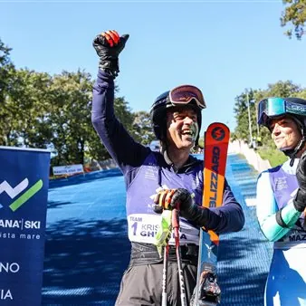

sab 10 ott · dalle 09:30
Barcolana Ski – Coppa d’Autunno: il 10 ottobre la sfida ad Aurisina
Dal mare alla montagna, dalle vele della Barcolana alle porte di uno slalom gigante. Barcolana Ski torna in Friuli Venezia Giulia e raddoppia, trasformandosi in un progetto che unirà idealmente l’Adriatico e le Alpi attraverso due appuntamenti, il primo, la “Coppa d’Autunno”…
 Indicazioni
Indicazioni
- Costi e prenotazioni
- Costo non indicato · Prenotazione non indicata
- Programma
- Programma da verificare. Apri la fonte ufficiale per orari e possibili aggiornamenti.
- In caso di maltempo
- Nessuna indicazione specifica pubblicata.
- Note
- Acquisito automaticamente dalla fonte.
L’EVENTO
Descrizione completa
Il primo appuntamento è fissato per sabato 10 ottobre, alla vigilia della grande regata, sulla pista di plastica del Centro Federale di avviamento agli sport invernali “Neve Sole” di Aurisina, nel comune di Duino Aurisina, struttura di proprietà dello Sci Club 70 di Trieste. A guidare i due team saranno due autentiche leggende dello sci internazionale: Kristian Ghedina, uno dei più celebri velocisti italiani, e Tina Maze, vincitrice della Coppa del Mondo generale, due volte campionessa olimpica e quattro volte campionessa mondiale. La formula prevede uno slalom gigante in due manche tra il Team Ghedina e il Team Maze. Ciascuna squadra sarà composta dall’ambassador e da quattro giovani atleti, due ragazzi e due ragazze. Complessivamente saranno quindi otto i giovani sciatori del Friuli Venezia Giulia, selezionati dal Comitato FISI FVG con l’obiettivo di rappresentare l’intero territorio regionale. La giornata prenderà il via alle 9.30 con l’arrivo dei protagonisti ad Aurisina, seguito dalla ricognizione del tracciato e, dalle 10.30, dalle due manche di gara. Nel pomeriggio Barcolana Ski si trasferirà nel cuore di Trieste: alle 17.30, in Piazza Unità d’Italia, nell’Hospitality PromoTurismoFVG, sono previsti i saluti delle autorità e le premiazioni, seguiti da una sessione di autografi con campioni e atleti. È proprio questa doppia dimensione a rappresentare l’essenza dell’iniziativa: al mattino gli sci ai piedi sul Carso, a pochi chilometri dall’Adriatico, e poche ore più tardi il mare e le vele della Barcolana come scenario. A precedere le premiazioni, alle 17:00 ci sarà un la consegna degli attestati relativi al corso di specializzazione dedicato all’insegnamento dello sci a persone con disabilità, sia fisiche che intellettivo-relazionali, un percorso formativo promosso dal Collegio Regionale Maestri di Sci del Friuli Venezia Giulia, insieme ad AMSI FVG e PromoTurismoFVG.
IL PROGRAMMA
Programma e orari
Appuntamenti raccolti dalle fonti elencate. Dove manca un orario, non è ancora disponibile in questa scheda.
Programma pubblicato
- Dal 2026-10-10 al 2026-10-10
INFORMAZIONI UTILI
Prima di partire
- Controllare la fonte prima di partire.
ORGANIZZAZIONE